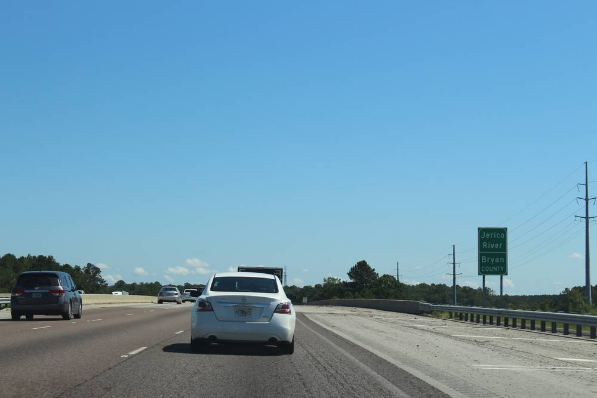

미국 조지아 조합원 소유 전력협동조합 코스털 일렉트릭, 남은 이익 153만 달러를 조합원에게 돌려준다

2011~2013년 전기를 쓴 조합원 대상…지금까지 돌려준 출자배당 2,300만 달러 넘어, 조합원 2만여 명
미국 조지아주 해안 지역의 조합원 소유 비영리 전력협동조합 코스털 일렉트릭(Coastal Electric Cooperative)이 2011~2013년에 전기를 공급받은 조합원에게 출자배당(capital credits) 153만4,289.65달러를 돌려준다. 조합원이 직접 뽑은 이사회가 10월 28일 회의에서 이를 의결했고, 지급은 11월부터 이뤄진다. 출자배당은 전기 공급 비용을 넘어선 수입을 조합원 각자의 소유 지분으로 쌓아 두었다가 재정이 허락할 때 돌려주는 돈으로, 50달러 이상은 12월 초 수표로, 50달러 미만은 11월부터 전기요금에서 깎아 준다. 다른 곳으로 이사한 옛 조합원도 전기를 쓴 해만큼 받을 수 있으며, 조합은 지금까지 2,300만 달러 넘는 출자배당을 조합원에게 돌려줬다. 코스털 일렉트릭은 브라이언·리버티·롱·매킨토시 4개 카운티의 조합원 2만여 명에게 전기를 공급한다.
시민에너지 관점
조합원 2만여 명이 지금까지 2,300만 달러 넘게 돌려받았다는 숫자는 전기 사업의 이익이 누구에게 가느냐에 따라 지역 살림이 달라진다는 사실을 보여 준다. 협동조합은 규모가 작아 비효율적이라는 지적이 있지만, 미국 농촌 전력의 상당 부분을 이런 조합이 수십 년째 맡아 오며 남는 돈을 주주가 아닌 주민에게 돌려주고 있다. 전기를 사서 쓰는 소비자가 아니라 지분을 가진 주인이 되면 요금과 이익 모두 지역 안에서 돈다. 우리도 햇빛소득마을과 에너지협동조합이 이익을 조합원 출자 지분에 따라 돌려주는 구조를 처음부터 정관에 담도록 제도로 뒷받침해야 한다.
출처: WTOC 2026-11-09 Tyler Walls 원문 보기
米ジョージア州の組合員所有の電力協同組合コースタル・エレクトリック、余剰利益153万ドルを組合員に返す
2011〜2013年に電気を使った組合員が対象…これまで返した出資配当は2,300万ドル超、組合員は2万人余り
米ジョージア州沿岸部の組合員所有の非営利電力協同組合コースタル・エレクトリック（Coastal Electric Cooperative）が、2011〜2013年に電気の供給を受けた組合員に出資配当（キャピタルクレジット）153万4,289.65ドルを返還する。組合員が選んだ理事会が10月28日の会合でこれを決め、支払いは11月から行われる。出資配当は電気の供給コストを上回った収入を組合員それぞれの所有持分として積み立て、財務に余裕ができたときに返すお金で、50ドル以上は12月初めに小切手で、50ドル未満は11月から電気料金から差し引かれる。他の地域へ転居した元組合員も電気を使った年の分を受け取ることができ、組合はこれまでに2,300万ドルを超える出資配当を組合員に返してきた。コースタル・エレクトリックはブライアン、リバティ、ロング、マッキントッシュの4郡の組合員2万人余りに電気を供給している。
市民エネルギーの視点
2万人余りの組合員がこれまでに2,300万ドル超を受け取ったという数字は、電気事業の利益が誰に渡るかによって地域の暮らしが変わることを示している。協同組合は規模が小さく非効率だという指摘もあるが、米国の農村電力の多くをこうした組合が何十年も担い、余ったお金を株主ではなく住民に返してきた。電気を買って使う消費者ではなく、持分を持つ所有者になれば、料金も利益も地域の中で回る。韓国でも、太陽光所得村やエネルギー協同組合が、利益を組合員の出資持分に応じて返す仕組みを最初から定款に盛り込めるよう、制度で後押しすべきだ。
出典: WTOC 2026-11-09 Tyler Walls 原文を読む
美国佐治亚州社员所有的电力合作社Coastal Electric向社员返还153万美元盈余
对象为2011~2013年用电的社员…迄今返还的资本信用超过2,300万美元，社员2万余人
美国佐治亚州沿海地区由社员所有的非营利电力合作社Coastal Electric Cooperative，将向2011~2013年接受供电的社员返还153万4,289.65美元资本信用（capital credits）。由社员选出的理事会在10月28日的会议上通过了这一决定，返还从11月开始。资本信用是把超出供电成本的收入作为每位社员的所有权份额积存起来、在财务允许时返还的资金：50美元及以上的将于12月初以支票支付，不足50美元的从11月起在电费中抵扣。已迁离的前社员也可按用电年份领取，该合作社迄今已向社员返还超过2,300万美元的资本信用。Coastal Electric为布赖恩、利伯蒂、朗和麦金托什4个县的2万余名社员供电。
市民能源视角
2万余名社员迄今已拿回超过2,300万美元，这一数字说明，电力事业的利润流向谁，决定了地方生活的面貌。有人认为合作社规模小、效率低，但美国农村电力的很大一部分几十年来正是由这类合作社承担，盈余返还给居民而不是股东。不再只是买电的消费者，而是持有份额的主人，电费和利润都会在本地循环。韩国也应在制度上予以支持，让“阳光收入村”和能源合作社从一开始就在章程中写明按社员出资份额返还利润的机制。
来源: WTOC 2026-11-09 Tyler Walls 查看原文
Georgia's Member-Owned Coastal Electric Cooperative to Return $1.53 Million in Surplus to Members
Members served in 2011–2013 are eligible; the co-op has now returned more than $23 million in capital credits to its 20,000-plus members
Coastal Electric Cooperative, a member-owned, not-for-profit electricity co-op on the Georgia coast, will retire $1,534,289.65 in capital credits to members who received service from 2011 to 2013. The member-elected board approved the move at its 28 October meeting, and the credits are being retired in November. Capital credits are revenues above the cost of service, recorded as each member's ownership share and paid back when finances allow: amounts of $50 or more will go out as cheques in early December, while smaller sums will appear as bill credits from November. Former members who have moved away can still claim for the years they were served, and the co-op has now returned more than $23 million in capital credits in total. Coastal Electric supplies more than 20,000 members in Bryan, Liberty, Long and McIntosh counties.
Citizen Energy View
The fact that some 20,000 members have received more than $23 million so far shows that who gets the profits of the power business shapes the local economy. Co-ops are sometimes called too small to be efficient, yet such co-ops have served much of rural America for decades, returning surpluses to residents rather than shareholders. When people become owners with a stake rather than just customers buying power, both bills and profits circulate locally. Korea should back sunlight income villages and energy co-ops with rules that write profit-sharing by members' stakes into their articles from the start.
Source: WTOC 2026-11-09 Tyler Walls Read the original